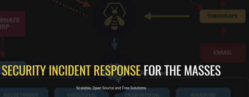
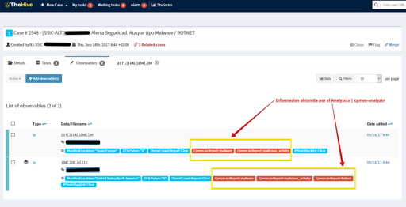
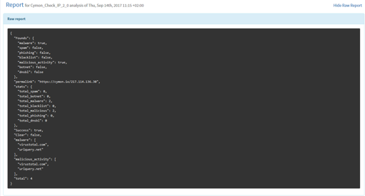

|  |
{kind=link}
[
{kind=link}
Cuando eres un Tier1/L2 SOC Security Analyst disponer de la mejor
herramienta para la toma de decisiones es fundamental con objeto de
“responde” ante una Amenaza de la mejor forma y lo más rápido posible.
En mi paso como “Manager” del antiguo equipo del **Centro de
Inteligencia y Operaciones de Seguridad, denominado SSIC** por la siglas
(SVT Security Intelligence & Operations Center), se indicaba que la
prioridad era conseguir herramientas que permitan a nuestros analistas
L1 / L2 disponer de la mejor información en el menor tiempo posible,
permitiendo decisiones / acciones inmediatas.
Es un placer compartir con la comunidad el desarrollo de un módulo para
análisis de direcciones IP “sospechosas”, os presento,
cymon-analyzer, es un
plugins (analizador) desarrollado para el motor
Cortex del proyecto
Descripción
**
cymon-analyzer** permite analizar información sobre la reputación IP en
un “Incidente / Alerta” de seguridad en el servicio cymon.io (Open
Threat Intelligence) de forma automática, para ello se utiliza la API
que nos proporciona este servicio.
He desarrollado un modulo para
Cortex, que permite analizar
rápidamente y comprobar si la IP detectada como “potencialmente
peligrosa” (observable / evidencia) esta listada en “lista negras” por
mala reputación [Malware, Spam, Phishing, blacklist, Actividad
Maliciosa, etc].
|  |
| cymon-analyzer | Working in TheHive Platform | Captura pantalla del analyzer en funcionamiento. |
{kind=link}
De forma automática, un analista puede comprobar y obtener
información desde múltiples IP / Observables con un solo click. Se puede
ejecutar el Analyzer, y el motor [Cortex] a través del Analizador se
encarga de consultar “IP por IP” al servicio cymon.io devolviendo la
información en forma de etiqueta e Informe.
|  |
| Full Report | Informe resultante cymon-analyzers |
{kind=link}
TheHive-Project es una plataforma de gestión de Incidentes de Seguridad
(relativamente nueva) consolidada, que proporciona la herramienta
que un SOC/CERT necesita.
Es una herramienta desarrollada por expertos en Seguridad para equipos
de Seguridad. Sus capacidades de integración son espectaculares, no solo
gracias a la comunidad que cada día desarrolla más “Analyzer”
incrementando el valor de la herramienta y sus capacidades, sino también
debido a la capacidad de integración que proporciona la API de la
plataforma.
Si estáis interesados, podéis conseguir el analyzer en mi cuenta
personal de GitHUB | ST2Labs
Repositorio:
Enlaces de Interés
ST2Labs